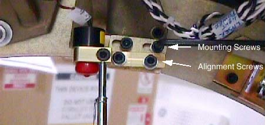

Operating Documentation
Direction 5307452-8EN, Rev# 4
Discovery CT750 HD Service Methods - Adv
Operating Documentation |
| Required Persons | Preliminary Reqs | Procedure | Finalization |
|---|---|---|---|
| 1 | Timing Not Applicable | 60 mins | 60 mins |
This procedure defines the steps necessary to replace and of the gantry laser lights.
| Last Revised: | June 30, 2008 |
| Item | Qty | Effectivity | Part# | Manufacturer | |
|---|---|---|---|---|---|
| Standard FE Toolkit | 1 | - | - | - | |
| 5 mm hex key | 1 | - | - | - | |
| Torque Wrench (for 7.9 N-m) and 5 mm hex end socket | 1 | - | - | - | |
| Item | Qty | Effectivity | Part# | Manufacturer | |
|---|---|---|---|---|---|
| See Illustrated Parts List | - | - | - | ||
| Follow ALL required safety and PPE procedures customary for your organization, when working on this product. | |
| Condition | Reference | Eff |
|---|---|---|
Only trained service personnel should service the GE CT Scanner. | - | - |
Remove gantry right side cover.
Refer to Parts Replacement → Gantry → Enclosure → (Cover Removal Procedures).
Turn OFF the Axial Drive, HVDC and 120 VAC switches on the gantry’s Service Switch Panel.
Remove the gantry left side cover, top covers and front cover.
Disconnect the electrical connection to the defective laser assembly
Loosen laser clamp with a 5 mm hex wrench holding the black laser in place as shown in Illustration 1. If additional clearance is needed, loosen 2 mounting screws (NOT the alignment screws). Remove mounting bracket if necessary.
Illustration 1: Laser Mount Assembly

Slide the new laser into the mounting bracket and tighten the clamp screw using a 5 mm hex wrench.
Table 1: Laser Clamp Torque
| 4 N-m | 3 lb-ft | 35 lb-in | 41 kg-cm |
Torque the Mounting and alignment screws (if touched) to the following:
Table 2: M6 Screw Torque
| 7.9 N-m | 5.8 lb-ft | 70 lb-in | 81 kg-cm |
Perform Alignment Light Adjustment to check and adjust the new laser.
Install the gantry top covers.
Refer to Parts Replacement → Gantry → Enclosure → (Cover Procedures).
Enable 120 VAC HVDC and Axial Drive service switches from the service switch panel. Press the table drives enable button on the lower right corner of the service switch panel.
Install the gantry right side cover.
Perform a [System Scanning Test] from the [Functional Checks] menu of the service manual to ensure system operation.